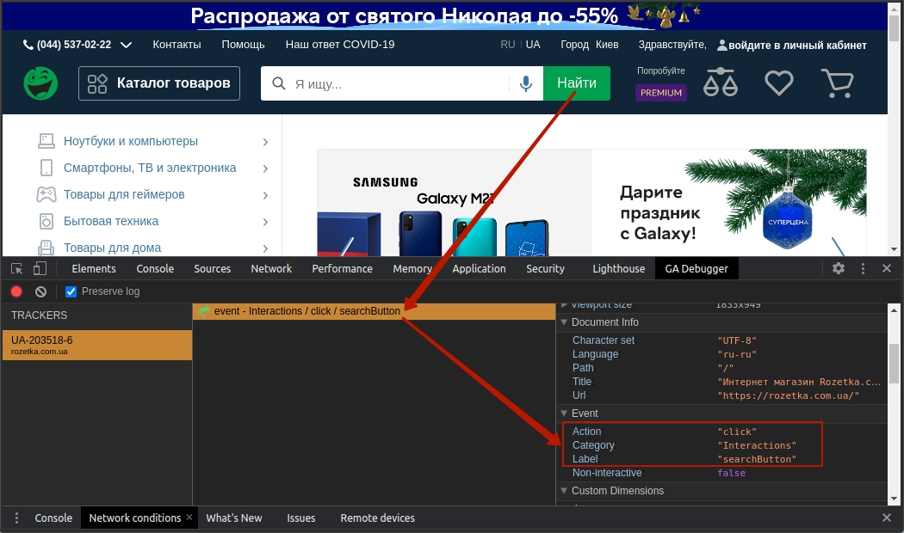
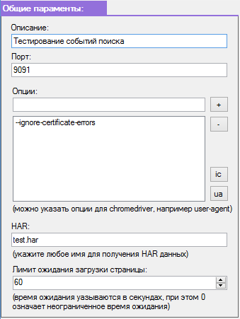
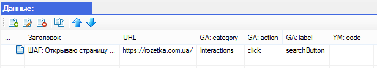
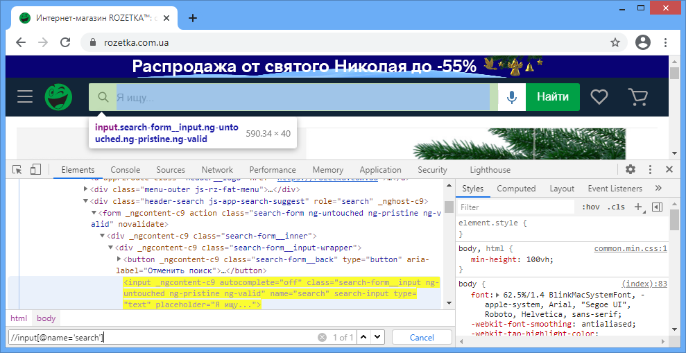
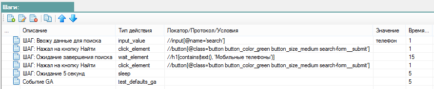

Демонстрационный тест
Демонстрационный тест
В папке tests вы найдете демонстрационный тест, данный сценарий выпонялет проверку событий GA.
Структура тестов описана в разделе структура теста

В данном примере используется сайт https://rozetka.com.ua на котором присутствуют события GA.
При нажатии на кнопку Найти мы можем видить ключи события GA, эти ключи используются в тесте.

Откроем файл с тестом test-search-ga.json в редакторе.
Рассмотрим общие параметры необходимые для работы теста.
 |
Общие параметры: На вкладке "Общие параметры" задаются следующие параметры теста: Описание - текстовое поле для краткого описания теста (наименование) Порт - текстовое поле в котором указывается порт для работы прокси (по умолчанию 9091) Опции - список настроек необходимых при работе Chrome WebDriver (по умолчанию --ignore-certificate-errors) HAR - текстовое поле в котором указывается имя для текущего пакета данных. Лимит - текстовое поле в котором указывается количество секунд ожидания для загрузки старницы (0 означает неограниченное время ожидания) |
Рассмотрим таблицу данных.
Данная таблица выполняется цеклично, то есть все строки в таблице будут выполнены по очереди при запуске теста. При выполнении каждой строки будут использоваться те действия которые описаны в таблице "Шаги"
 |
На вкладке "Данные" задаются параметры для проверки событий GA и YM Заголовок - текстовое поле для ввода любого текста выводимого в консоль при выполнении теста URL - текстовое поле в котором указывается ссылка на страницу на которой будет выполнятся тест GA:category - текстовое поле для ввода ключа category события GA GA:action - текстовое поле для ввода ключа action события GA GA:label - текстовое поле для ввода ключа label события GA YM:code - текстовое поле для ввода ключа события YM |
Рассмотрим таблицу шагов.
Для выполнения действий над элементами необходимо сформировать локаторы этих элементов

Конструировать локаторы xpath удобно в интрументе разработчика браузера Chrome.
 |
На вкладке "Шаги" описываются шаги которые необходимо выполнить на странице сайта включая проверку событий GA/YM Описание - текстовое поле в котором описывается данный шаг, данный текст выводится в консоль при выполнении теста Тип действия - текстовое поле для выбора или ввода ключа действия Локатор/Протокол/Условия - текстовое поле для ввода локатора в формате xpath или протокол GA/YM или ключ условия Значение - текстовое поле для ввода значения которое необходимо вписать в какой либо элемент (например input) или использовать в условии Время ожидания - указывается количество секунд ожидания для выполнения действия (или количество попыток при проверке событий GA/YM) |
Справочник с описанием всех встроенных типов действий вы найдете в этой документации.
Локаторы описываются в формате xpath и позволяют взаимодействовать с элементами страницы.
Запустив данный тест будет выполнена проверка событий GA на сайте Розетка.
Исходный код теста:
{
"description":"Тестирование событий поиска",
"port":9091,
"arguments":[
"--ignore-certificate-errors"
],
"har":"test.har",
"timeout":60,
"data":[
{
"title":"ШАГ: Открываю страницу https://rozetka.com.ua/",
"url":"https://rozetka.com.ua/",
"ga_category":"Interactions",
"ga_action":"click",
"ga_label":"searchButton",
"ym_code":""
}
],
"steps":[
{
"description":"ШАГ: Ввожу данные для поиска",
"type":"input_value",
"value":"телефон",
"locator":"//input[@name='search']",
"timeout":1
},
{
"description":"ШАГ: Нажал на кнопку Найти",
"type":"click_element",
"value":"",
"locator":"//button[@class='button button_color_green button_size_medium search-form__submit']",
"timeout":1
},
{
"description":"ШАГ: Ожидание завершения поиска",
"type":"wait_element",
"value":"",
"locator":"//h1[contains(text(), 'Мобильные телефоны')]",
"timeout":15
},
{
"description":"ШАГ: Нажал на кнопку Найти",
"type":"click_element",
"value":"",
"locator":"//button[@class='button button_color_green button_size_medium search-form__submit']",
"timeout":1
},
{
"description":"ШАГ: Ожидание 5 секунд",
"type":"sleep",
"value":"",
"locator":"",
"timeout":5
},
{
"description":"Событие GA",
"type":"test_defaults_ga",
"value":"",
"locator":"",
"timeout":5
}
]
}
Created with the Personal Edition of HelpNDoc: Create cross-platform Qt Help files